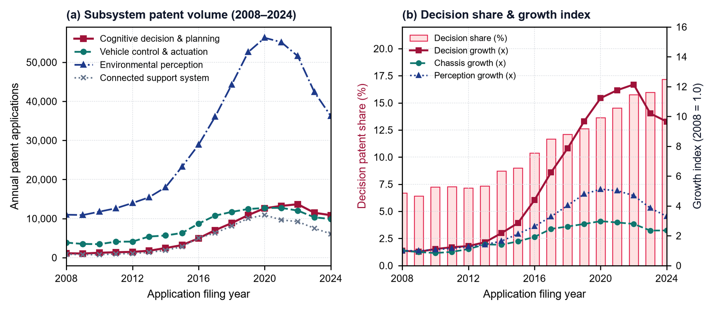
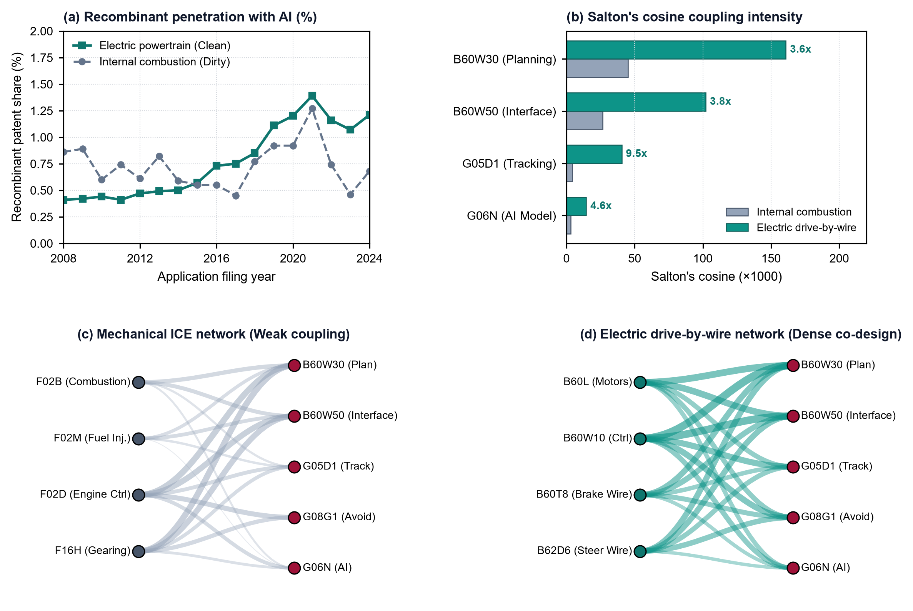
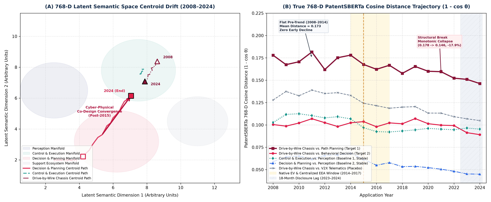
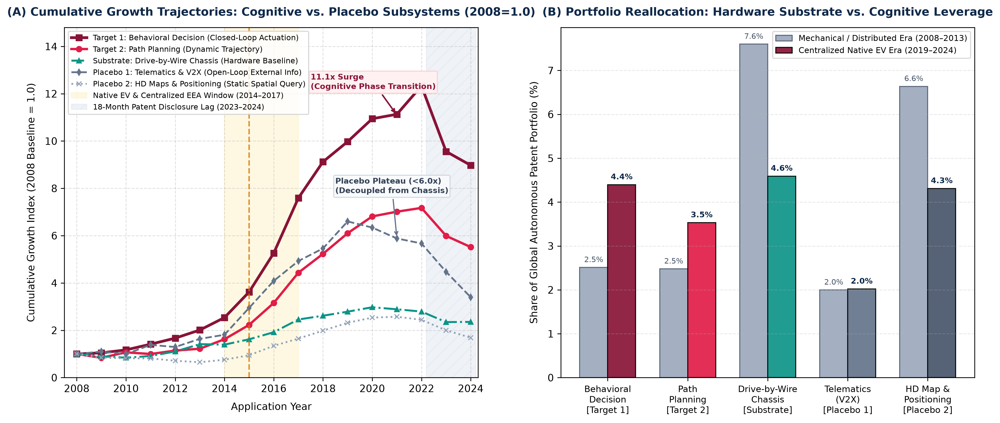
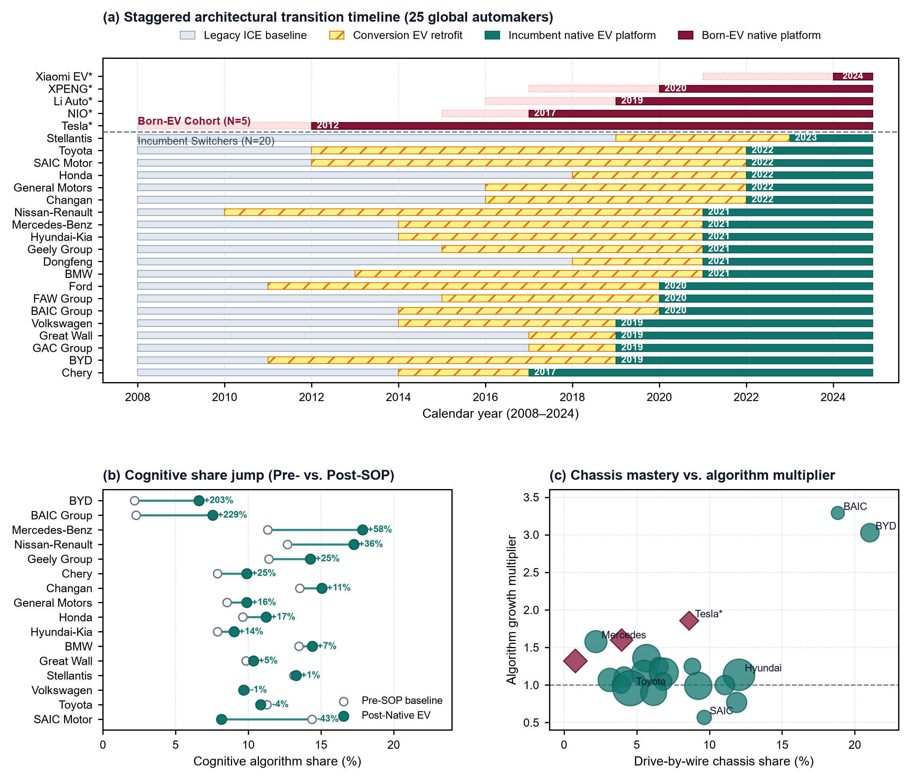
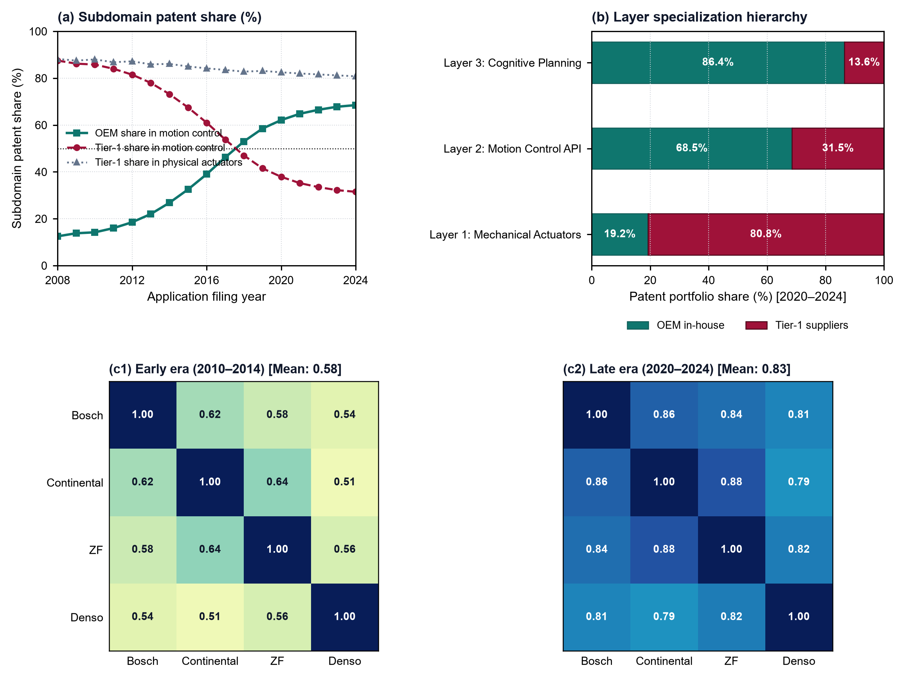
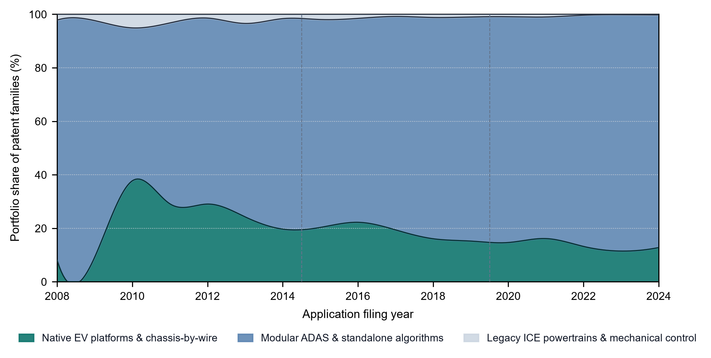
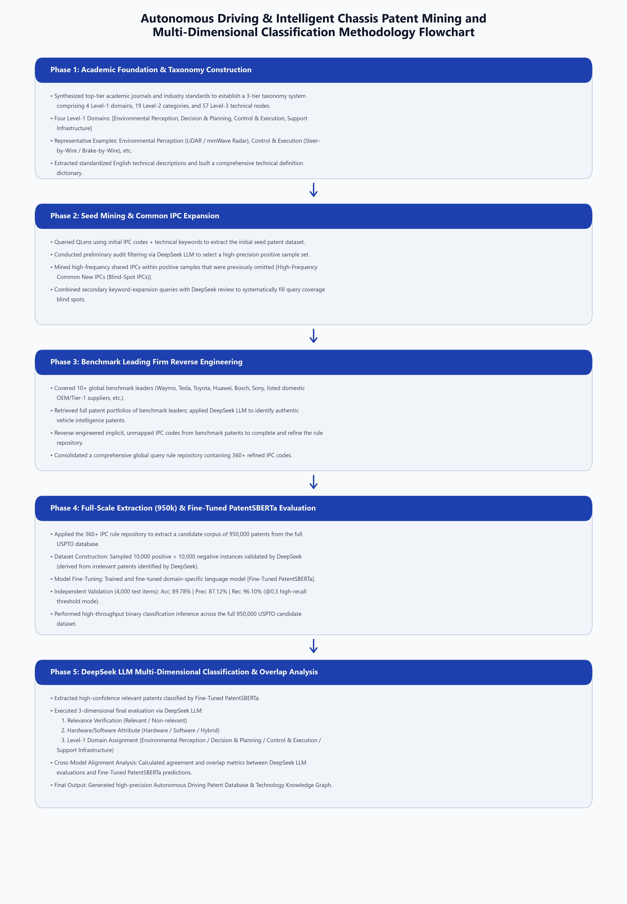
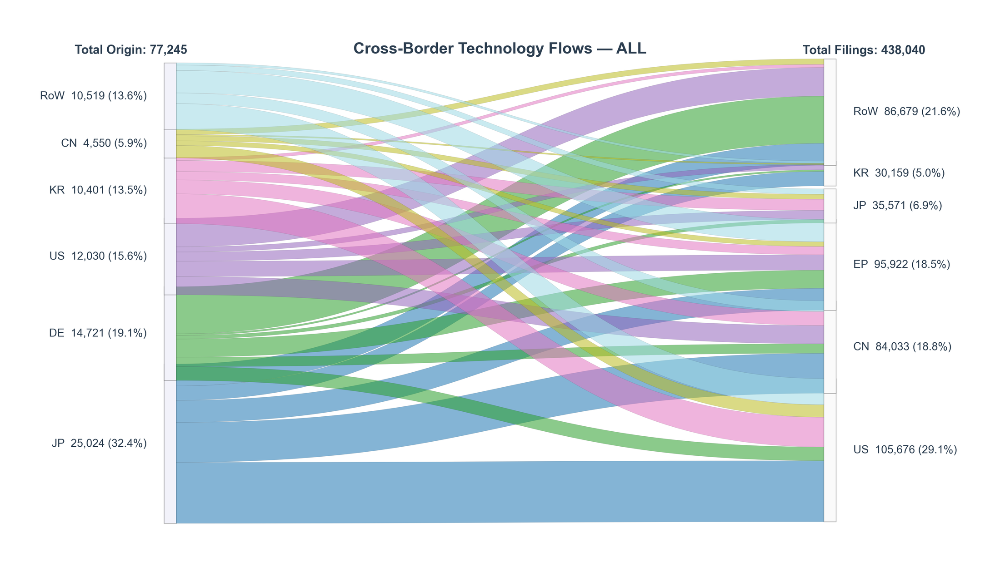

About
I am an applied microeconomist working as a research assistant to Prof. Jingbo Cui at Duke Kunshan University. My research concerns the micro-foundations of technical change: how the physical architecture of a technology shapes the direction of inventive search, the boundaries of the firm, and the organisation of supply chains.
Most of my work studies transportation electrification and embodied AI in the automotive industry, using large-scale patent data together with platform-level engineering detail. Methodologically I combine causal inference (staggered difference-in-differences, PPML, event studies) with high-dimensional text methods, including LLM-assisted patent classification and sentence-embedding measures of technological distance.
Research Interests
- Environmental and energy economics — carbon pricing, emissions trading, clean-technology innovation
- Innovation and technical change — knowledge recombination, technological distance, patent-based measurement
- Industrial organisation — vertical boundaries, modularity, supply-chain reorganisation
- Economics of AI and big data — LLM-based measurement, large-scale text as data
Working Papers
Job market paper and ongoing projects.
Job Market Paper · Research Proposal Technical Architecture, Knowledge Recombination, and the Vertical Boundary of the Firm: Evidence from Cyber-Physical Innovation in the Automotive Industry
Research proposal, October 2026. Descriptive evidence is complete; the causal tests described below are specified but not yet estimated. JEL: O31, O32, L22, L23, L62.
How do shifts in underlying technical architecture govern the micro-foundations of knowledge recombination and the vertical boundaries of the firm? Innovation economics largely attributes search frictions to cognitive distance or organisational boundaries, while the digital-innovation literature presumes that layered modular architectures permit frictionless hardware–software decoupling. In cyber-physical systems, however, cognitive algorithms must execute through electromechanical actuators governed by microsecond-level deterministic feedback loops, so the physical interface architecture becomes the binding conduit for recombinant search.
This research programme proposes three linked studies spanning 3.2M electric-powertrain patents, 5.8M internal-combustion patents, 510K verified autonomous-driving patents, 152 platform generations across 25 automakers, and 111K Tier-1 supplier patents. Study 1 documents descriptive stylised facts on recombination between powertrain hardware and cognitive algorithms. Study 2 is designed as a within-firm staggered difference-in-differences design that exploits the 2- to 10-year window during which incumbent automakers pursued modular retrofitting ahead of native platform redesign. Study 3 proposes to examine inter-firm vertical boundaries using supplier–OEM dyad citations.
[Proposal] [Proposal (中文)] [Slides] [Slides (中文)] [Data] [BibTeX]
Global Carbon Pricing and Clean Energy Innovation
Working paper, 2026.
This project evaluates the effects of carbon taxes and emissions trading schemes on clean-energy innovation. We map over five million granted patents (1990–2022) to more than 600 technologies in the IEA Clean Energy Technology Guide using a multi-model consensus pipeline built on large language models, reaching 80% classification accuracy against expert spot-checks versus a 25% standard IPC/CPC baseline. The empirical strategy uses staggered difference-in-differences and Poisson pseudo-maximum-likelihood regressions to isolate policy-induced innovation responses while addressing cohort heterogeneity.
[BibTeX]
The Evolution of the Network: Evidence from China
Presented at the 6th East Asian Association of Environmental and Resource Economics (AAERE) Conference, Seoul National University.
Using over 500,000 collaborative patent records and financial information for more than 5,000 Chinese listed companies, this paper builds the first systematic longitudinal visualisation and econometric study of the national patent collaboration network. Using social-network analysis in Python and fixed-effects panel regressions in Stata, we quantify firms' centrality in the collaborative topology and show that network centrality predicts a statistically significant 0.3% excess return.
Work in Progress
The Evolution of the Green Innovation Network: Stylized Facts from Chinese Listed Firms
Undergraduate honours thesis, Duke Kunshan University. Advisor: Prof. Jingbo Cui.
Examines how corporate social responsibility and institutional-shareholder oversight interact with green patenting in Chinese energy and industrial firms. Documents significant structural clustering in clean-technology adoption and studies how institutional investors mitigate stock-price crash risk through green-innovation monitoring.
Selected Figures
Click any figure to enlarge.
Research Proposal — Technical Architecture Trilogy








Energy Storage Patent Programme

Data and Interactive Tools
Interactive dashboards built for this research programme. All run in the browser and require no installation.
- Global diffusion of autonomous-driving technology — interactive Sankey diagram of cross-border technology flows among the top five countries and the rest of the world.
- Patent intelligence dashboard — twelve-dimension visual summary of 49,246 DeepSeek-verified positive samples.
- Patent data-engineering pipeline — architecture of the end-to-end extraction, classification and vectorisation workflow.
- OEM platform and architecture database — 25 automaker groups, 152 platform generations, 264 production models. Available as .xlsx or .csv.
Curriculum Vitae
University of Michigan, Ann Arbor
2022 – 2023M.S. in Applied Economics. GPA 4.0/4.0.
Duke Kunshan University
2018 – 2022B.A. in Political Economy. GPA 3.8/4.0. Dean's List.
Research Assistant — Prof. Jingbo Cui
2021 – presentDuke Kunshan University. Patent-network economics, clean-technology patent classification, and the econometrics of environmental policy.
- Professional credentials
- CFA Level 3 Candidate (Levels I–II passed) · FRM Level 1
- Programming
- Python (pandas, NumPy, scikit-learn, PyTorch, Selenium, ccxt), R, Stata, SQL, LaTeX, Git
- Data sources
- Lens, USPTO, EPO, Orbis, DuckDB, PatentSBERTa / HuggingFace embeddings
- Languages
- Chinese (native), English (fluent)
Other Projects
- Multimodal handwritten-exam grading agent — end-to-end system combining FastAPI services, a Chrome extension and vision-OCR for automatic marking of scanned examinations.
-
High-frequency crypto trend and risk engine
— multi-horizon trend filter and risk controls on Binance one-minute data, built with
ccxtandmerge_asof.
Contact
I am currently applying for pre-doctoral research fellowships and PhD programmes in economics for 2026–2027.
Email: tl243@duke.edu
Affiliations: Duke Kunshan University; University of Michigan (M.S. alumnus)